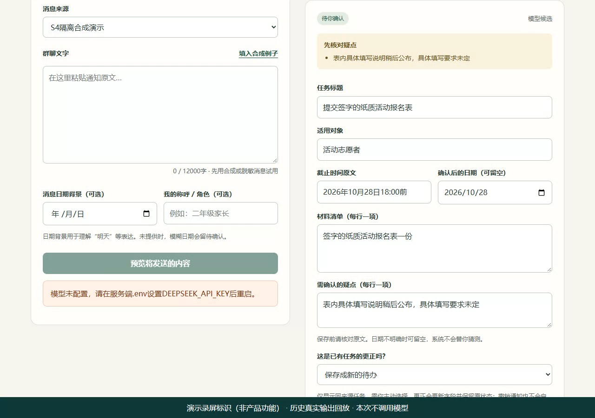

群聊待办助手
通知很长，待办需要看清。
让 AI 提取候选，由人核对并确认保存。
公开源码已可查看。新视频为 Codex 自动化操作的低帧率截图采样剪辑，含三次真实调用与两次预算拦截；试用入口已接入，需单独提供的访问码；免费服务首次唤醒可能约需一分钟。截止2026年10月19日15:30（北京时间）。

真实调用的采样演示
2026年10月12日，源版本66a39f3，约172秒。Codex 自动化实录 · 低帧率截图采样 · 操作剪辑，非连续录屏。三次真实调用与两次未调用模型的预算拦截均保留；非请求操作间隔有删减。调用区间保持真实静帧，包含截图工具开销，不代表网页持续等待。页面分析显示1.9 / 1.7 / 1.4秒，不等于视频区间时长，也不是独立供应商响应计时。
视频说明 · 剪辑时间映射 · 媒体检查报告。原始截图仅本地保留；第二次拦截未采到拒绝横幅，结论依据原操作时间轴。手机播放待实际设备确认。
历史回放 · 2026年10月10日本地版本
演示使用历史模型结果回放，约 70 秒。录像中的界面操作是真实操作，资料为合成通知；录像没有实时调用模型，从选择历史记录开始，展示确认、原文追溯、更正与导出。
从通知到待办
提取结果先进入候选区。原文定位帮助检查依据，但不保证模型理解正确，最终保存始终需要人工确认。
- 粘贴与预览主动粘贴合成或脱敏通知，核对将发送的内容。
- 提取候选模型整理动作、对象、日期和材料，保留不确定信息。
- 对照原文查看出处，编辑候选，再确认保存。
- 管理与更正完成或重新打开待办；更正时主动关联同来源旧任务，并核对新旧原文。
我的参与方式
我提出通知整理的想法，选择参考设计，与 Codex 讨论需求、核对结果并提出反馈；代码和技术实现主要由 AI 完成。已有本地版本经本人试用确认可使用。本轮我亲自核对两组合成通知的修订答案，也已查看固定五份实际实验输出，判断均暂不修改；独立审查发现的遗漏另行保留。
一个已开始检验的问题
补上用户选中的历史消息，能否让“上述材料”更清楚？旧通知也可能带来错误日期或关联。本轮10组合成通知已完成三轮共60次真实调用，比较只看当前消息与额外看1–2条选中历史。历史补全了部分材料和对象，也出现PDF、数量和出处遗漏；独立复核不是预注册正式准确率。
项目中的实现选择
应用将数据保存在本机，通过模型提取候选，再由人工确认。更正采用手动关联，而不是自动根据相似文本替换旧任务，保留初始出处与更正出处。
验证与仍有的限制
历史本地版本的合成集曾出现对象和材料遗漏，修订后完成当时的小型固定集验收；这属于2026年10月10日版本记录，不代表本轮实验或现实群聊准确率。
本轮增加只接受三组合成通知的临时演示，会话内可编辑、确认、更正与导出。云HTTPS已通过37项断言及2次真实调用验收，60次实验及独立复核已完成。真实调用采样视频已接入，公众窗口已一次激活，public部署已上线；试用入口已通过public无付费连接检查并接入，手机另一网络验证仍待完成。桌面浏览器检查不能替代第二台手机。模糊信息仍需人核对，JSON目前不支持导入恢复。
联系 cxf
正在寻找实习机会，欢迎聊聊 Vibe Coding 与 AI 应用实践。
974250837@qq.com